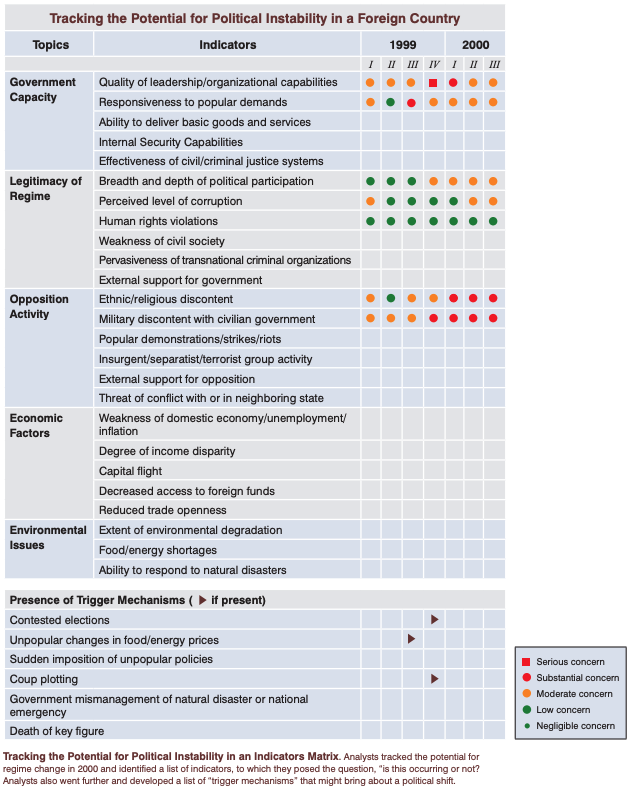

This is a place for me to take notes on and review texts, books, and posts; record random thoughts and ideas in more depth; and record notes that I'd like to reference quickly. Some notes go into my Anki decks.
Blockquotes (see below for example) are essentially direct quotes. For example, if the quote says "In our lives, we are constantly ...", I will shorten it to "We are constantly ...". No information is lost, but the note is shorter for reference and typing. Anything in [square brackets like this] is my personal note.
This is a blockquote example [and here is a personal note].
Notes I: Papers, posts, ideas, information
Notes II: Economics, medicine, (geo)politics, technology, science
Notes III: Books, podcasts
Notes IV: Electronics
Notes V: Miscellaneous
Bezos' Razors:
Skinner's Law:
Luck Razor:
Bragging Razor:
Naval's Razors:
Munger's Law:
Source: List of how people have become more hard-working
Individual points that were mentioned the most:
- (Soft) accountability (deadlines, beeminder, accountability buddy, posting about your goals, boss as a service, promising friends) (9)
- Working on interesting problems/enjoyable work (and in an enjoyable work environment) (8)
- Focusmate/Coworking (often poms) (7)
I was helping a friend try to decide between two jobs in different cities and these are the qualifiers we came up with. These are in no particular order and should be weighted on a subjective basis. These are similar to the considerations from Where to Live for Happiness. Posting this here for reference or future additions.
Every so often, the [lottery name] gets over $1 billion, which is the cue for me to buy a ticket or two just for the heck of it. Here's best practices for winning those who win really big lotteries. Everything is unformatted because I'm lazy.
u/BlakeClass's famous Reddit comment first comes to mind:
So, what the hell DO you do if you are unlucky enough to win the lottery? This is the absolutely most important thing you can do right away: NOTHING. Yes. Nothing. DO NOT DECLARE YOURSELF THE WINNER yet. Do NOT tell anyone. The urge is going to be nearly irresistible. Resist it. Trust me. / 1. IMMEDIATELY retain an attorney. Get a partner from a larger, NATIONAL firm. Don't let them pawn off junior partners or associates on you. They might try, all law firms might, but insist instead that your lead be a partner who has been with the firm for awhile. Do NOT use your local attorney. Yes, I mean your long-standing family attorney who did your mother's will. Do not use the guy who fought your dry-cleaner bill. Do not use the guy you have trusted your entire life because of his long and faithful service to your family. In fact, do not use any firm that has any connection to family or friends or community. TRUST me. This is bad. You want someone who has never heard of you, any of your friends, or any member of your family. Go the the closest big city and walk into one of the national firms asking for one of the "Trust and Estates" partners you have previously looked up on http://www.martindale.com from one of the largest 50 firms in the United States which has an office near you. You can look up attornies by practice area and firm on Martindale. / 2. Decide to take the lump sum. Most lotteries pay a really pathetic rate for the annuity. It usually hovers around 4.5% annual return or less, depending. It doesn't take much to do better than this, and if you have the money already in cash, rather than leaving it in the hands of the state, you can pull from the capital whenever you like. If you take the annuity you won't have access to that cash. That could be good. It could be bad. It's probably bad unless you have a very addictive personality. If you need an allowance managed by the state, it is because you didn't listen to point #1 above. Why not let the state just handle it for you and give you your allowance? Many state lotteries pay you your "allowence" (the annuity option) by buying U.S. treasury instruments and running the interest payments through their bureaucracy before sending it to you along with a hunk of the principal every month. You will not be beating inflation by much, if at all. There is no reason you couldn't do this yourself, if a low single-digit return is acceptable to you. You aren't going to get even remotely the amount of the actual jackpot. Take our old friend Mr. Whittaker. Using Whittaker is a good model both because of the reminder of his ignominious decline, and the fact that his winning ticket was one of the larger ones on record. If his situation looks less than stellar to you, you might have a better perspective on how "large" your winnings aren't. Whittaker's "jackpot" was $315 million. He selected the lump-sum cash up-front option, which knocked off $145 million (or 46% of the total) leaving him with $170 million. That was then subject to withholding for taxes of $56 million (33%) leaving him with $114 million. In general, you should expect to get about half of the original jackpot if you elect a lump sum (maybe better, it depends). After that, you should expect to lose around 33% of your already pruned figure to state and federal taxes. (Your mileage may vary, particularly if you live in a state with aggressive taxation schemes). / 3. Decide right now, how much you plan to give to family and friends. This really shouldn't be more than 20% or so. Figure it out right now. Pick your number. Tell your lawyer. That's it. Don't change it. 20% of $114 million is $22.8 million. That leaves you with $91.2 million. DO NOT CONSULT WITH FAMILY when deciding how much to give to family. You are going to get advice that is badly tainted by conflict of interest, and if other family members find out that Aunt Flo was consulted and they weren't you will never hear the end of it. Neither will Aunt Flo. This might later form the basis for an allegation that Aunt Flo unduly influenced you and a lawsuit might magically appear on this basis. No, I'm not kidding. I know of one circumstance (related to a business windfall, not a lottery) where the plaintiffs WON this case. Do NOT give anyone cash. Ever. Period. Just don't. Do not buy them houses. Do not buy them cars. Tell your attorney that you want to provide for your family, and that you want to set up a series of trusts for them that will total 20% of your after tax winnings. Tell him you want the trust empowered to fund higher education, some help (not a total) purchase of their first home, some provision for weddings and the like, whatever. Do NOT put yourself in the position of handing out cash. Once you do, if you stop, you will be accused of being a heartless bastard (or bitch). Trust me. It won't go well. It will be easy to lose perspective. It is now the duty of your friends, family, relatives, hangers-on and their inner circle to skew your perspective, and they take this job quite seriously. Setting up a trust, a managed fund for your family that is in the double digit millions is AMAZINGLY generous. You need never have trouble sleeping because you didn't lend Uncle Jerry $20,000 in small denomination unmarked bills to start his chain of deep-fried peanut butter pancake restaurants. ("Deep'n 'nutter Restaurants") Your attorney will have a number of good ideas how to parse this wealth out without turning your siblings/spouse/children/grandchildren/cousins/waitresses into the latest Paris Hilton. / 4. You will be encouraged to hire an investment manager. Considerable pressure will be applied. Don't. Investment managers charge fees, usually a percentage of assets. Consider this: If they charge 1% (which is low, I doubt you could find this deal, actually) they have to beat the market by 1% every year just to break even with a general market index fund. It is not worth it, and you don't need the extra return or the extra risk. Go for the index fund instead if you must invest in stocks. This is a hard rule to follow. They will come recommended by friends. They will come recommended by family. They will be your second cousin on your mother's side. Investment managers will sound smart. They will have lots of cool acronyms. They will have nice PowerPoint presentations. They might (MIGHT) pay for your shrimp cocktail lunch at TGI Friday's while reminding you how poor their side of the family is. They live for this stuff. You should smile, thank them for their time, and then tell them you will get back to them next week. Don't sign ANYTHING. Don't write it on a cocktail napkin (lottery lawsuit cases have been won and lost over drunkenly scrawled cocktail napkin addition and subtraction figures with lots of zeros on them). Never call them back. Trust me. You will thank me later. This tactic, smiling, thanking people for their time, and promising to get back to people, is going to have to become familiar. You will have to learn to say no gently, without saying the word "no." It sounds underhanded. Sneaky. It is. And its part of your new survival strategy. I mean the word "survival" quite literally. Get all this figured out BEFORE you claim your winnings. They aren't going anywhere. Just relax. / 5. If you elect to be more global about your paranoia, use between 20.00% and 33.00% of what you have not decided to commit to a family fund IMMEDIATELY to purchase a combination of longer term U.S. treasuries (5 or 10 year are a good idea) and perhaps even another G7 treasury instrument. This is your safety net. You will be protected... from yourself. You are going to be really tempted to starting being a big investor. You are going to be convinced that you can double your money in Vegas with your awesome Roulette system/by funding your friend's amazing idea to sell Lemming dung/buying land for oil drilling/by shorting the North Pole Ice market (global warming, you know). This all sounds tempting because "Even if I lose it all I still have $XX million left! Anyone could live on that comfortably for the rest of their life." Yeah, except for 33% of everyone who won the lottery. You're not going to double your money, so cool it. Let me say that again. You're not going to double your money, so cool it. Right now, you'll get around 3.5% on the 10 year U.S. treasury. With $18.2 million (20% of $91.2 mil after your absurdly generous family gift) invested in those you will pull down $638,400 per year. If everything else blows up, you still have that, and you will be in the top 1% of income in the United States. So how about you not fuck with it. Eh? And that's income that is damn safe. If we get to the point where the United States defaults on those instruments, we are in far worse shape than worrying about money. If you are really paranoid, you might consider picking another G7 or otherwise mainstream country other than the U.S. according to where you want to live if the United States dissolves into anarchy or Britney Spears is elected to the United States Senate. Put some fraction in something like Swiss Government Bonds at 3%. If the Swiss stop paying on their government debt, well, then you know money really means nothing anywhere on the globe anymore. I'd study small field sustainable agriculture if you think this is a possibility. You might have to start feedng yourself. / 6. That leaves, say, 80% of $91.2 million or $72.9 million. Here is where things start to get less clear. Personally, I think you should dump half of this, or $36.4 million, into a boring S&P 500 index fund. Find something with low fees. You are going to be constantly tempted to retain "sophisticated" advisers who charge "nominal fees." Don't. Period. Even if you lose every other dime, you have $638,400 per year you didn't have before that will keep coming in until the United States falls into chaos. Fuck advisers and their fees. Instead, drop your $36.4 million in the market in a low fee vehicle. Unless we have an unprecedented downturn the likes of which the United States has never seen, should return around 7.00% or so over the next 10 years. You should expect to touch not even a dime of this money for 10 or 15 or even 20 years. In 20 years $36.4 million could easily become $115 million. / 7. So you have put a safety net in place. You have provided for your family beyond your wildest dreams. And you still have $36.4 million in "cash." You know you will be getting $638,400 per year unless the capital building is burning, you don't ever need to give anyone you care about cash, since they are provided for generously and responsibly (and can't blow it in Vegas) and you have a HUGE nest egg that is growing at market rates. (Given the recent dip, you'll be buying in at great prices for the market). What now? Whatever you want. Go ahead and burn through $36.4 million in hookers and blow if you want. You've got more security than 99% of the country. A lot of it is in trusts so even if you are sued your family will live well, and progress across generations. If your lawyer is worth his salt (I bet he is) then you will be insulated from most lawsuits anyhow. Buy a nice house or two, make sure they aren't stupid investments though. Go ahead and be an angel investor and fund some startups, but REFUSE to do it for anyone you know. (Friends and money, oil and water - Michael Corleone) Play. Have fun. You earned it by putting together the shoe sizes of your whole family on one ticket and winning the jackpot.
u/nreshackleford replies with further suggestions:
I might add that if your state requires disclosure of the winner: Sign the ticket, and make multiple xerox copies. Store the ticket and the copies in separate safe deposit boxes (in separate banks, jackass). Unless signed, the ticket is "bearer paper" and belongs to literally whoever is holding it (at least that's the language on the back of all the tickets I've ever bought). You will now want to form a trust or other legal fiction. Sign the ticket over to the legal fiction (trust, LLC, whatever your fancy lawyer tells you is best) by special endorsement. Have a representative of the legal fiction collect the prize money.
Link: 25 Anti-Mimetic Tactics for Living a Counter-Cultural Life
The word ‘mimetic’ was coined by the French social theorist René Girard. It is related to the word ‘mimic’—the human propensity to mimic what the people around them are doing. But Girard’s finding went deeper: it’s not only what they do, but what they want that we also mimic. We adopt their desires as our own, unconsciously—and then convince ourselves that our desires are entirely our own. He called this mimetic desire,
Below are my thoughts on Burgis' list. Blockquoted are the main points, followed by my thoughts.
25. Anti-Mimetic Scheduling: Each of us has the power, though, to make our experiences a bit less stressful and more enjoyable if we take advantage of the off-peak times when we have the freedom to do things on our own time.
Great point. Weekdays are especially nice for going to generally crowded places (movie, zoo, etc). AMS can also be cheaper than standard (e.g., dinner often costs more than lunch).
24. Building a Deep Bookshelf: My challenge: allocate 10% of your annual reading to books where you know you’re not going to ‘agree’ with the fundamental premise. This goes for periodicals, too.
I agree: this is good for expanding one's viewpoint and/or strengthening a current argument against something.
22. Learn to Navigate without GPS
This heavily depends on what's going on, but I'd argue fastest often equals best.
21. Watch stellar old films that never benefited from mimetically-inflated popularity
Disagree. Flipping the NNT quote back on him, it's not solely because it's old, it's because it's old and still popular. Movies that are 25+ years old and no one has heard of are probably not that great, whereas classics like Citizen Kane and Casablanca are probably excellent choices.
18. Filter Feedback: some feedback is good, some feedback is bad. And too much feedback is detrimental — especially to a Creative. At a certain point, you have to choose. If you try to take into account every person’s opinion, you’ll end up with something ‘nice’ — not great. The same is true of ‘market research’ and ‘data’ — people don’t know what they want.
This is something I've been battling more and more with. I was a huge proponent of "all feedback is good feedback", but what if the other person is wrong, a gaslighter, or just misguided? Then the feedback is worthless. I think most feedback from qualified people is good feedback; everything else can likely be discarded without worry.
13. Social Media with a Purpose: To take an anti-mimetic approach to social media, either 1) get off it completely; or 2) be guided by a very clear purpose.
Agreed. Social media is generally harmful, but it can be utilized for specific purposes with little to no harm (when compared to the standard use).
12. Start Going Analog: The mimetic acceleration that technology produces is one of distraction; the anti-mimetic gift of investing in more analog is attention.
Plus one for physical books and exercising in forests! Significantly better for both, and most analog in general. Being with friends in person as opposed to over the phone is another good example.
11. Clean Up Your Consumption: Consumerism is a spirit that enslaves us to our own desires and leaves no room for others; it undermines human freedom by short-circuiting our ability to respond to non-economic values (and there are many: like taking time off work to spend ‘non-productive’ time with an aging parent).
Agreed. Distraction via consumerism is significant and often distracts from goals.
8. Speak the Truth: Speak the truth in accord with your conscience no matter what the cost.
Self-explanatory.
1. Live Out Your Personal Vocation: Discovering and living out a sense of calling — a personal vocation, or something you are uniquely meant to do — is the ultimate way to cut through the mimetic noise of the world and begin to shape both a moral and a vocational compass. When you have a mission, it begins to act like an interpretative key to everything and allows you to know what to pay attention to.
Following the path to the end with minimal straying makes mimesis a bit more difficult, especially if the path is pre-defined.
During a conversation with niplav, he mentioned just how low-cost and high-reward prepping is, prompting me to think about why I don't do it. These are a few notes on what I could find about the basics of prepping.
Resources:
baseline consumption [for average U.S. citizen] is probably in excess of 10 gallons a day. On the other end of the spectrum, the absolute minimum water intake, as estimated by the US military, is somewhere around one quart per person per day; but note that this assumes no weather extremes, no substantial exertion, and no immediate hygiene needs.
Store-bought gallon jugs... should last 5+ years before needing to be rotated or thrown out.
For short-term survival:
- High-sugar energy bars. Grocery store brands have limited shelf life, but several prepper-targeted, Mylar-packed varieties can last 5-10 years. [Options can be found here.]
- Dry survival rations. Should last 5-10 years when stored in a cool place. A tolerable choice for short- to medium-term nutrition in an emergency. Easy to pack, giving you ~2,200 kcal per pound.
- Canned meat, veggies, or fruit. Storage life in excess of 20 years (regardless of "best by" dates). Tasty, relatively cheap (~200-300 kcal per dollar)
For folks who want to focus on the most plausible risks, I suggest stockpiling dry survival rations to last around 2-3 weeks; seven 3,600 kcal packets per person
The most cost-effective approach is to stick to devices that can take regular AA, AAA, or PP3 (9V) batteries; modern alkaline cells have very long shelf lives (10 years), can be bought cheaply in bulk, and will do the trick for almost all portable electronics you can think of.
- Flashlights or headlamps. Get two small, high-quality AA flashlights or headlamps that give you at least 20 hours on low power; keep one near your bed, and another in your car or in an emergency stash.
- An old-fashioned radio receiver. A battery-operated AM/FM radio if cell networks and the Internet are down. A cheap, brand-name model, such as Sony ICFP26, will do just fine.
- A thermometer that won't run out of juice. A traditional glass thermometer will also work, but is more fragile.
Except for flashlights, don't keep any batteries in your emergency electronics, as to minimize the danger of an electrolyte leak messing up the device.
List of essential tools for repairs and such:
Cheap pocket knife; basic, no-frills multitool; small adjustable wrench; at least 100 ft of paracord or UHMWPE rope; big roll of duct tape; rudimentary sewing kit; decent pen or a mechanical pencil; pack of writing pads; sharp, large scissors; needle-point tweezers; compact but sturdy hammer; box of 1" nails; usable can opener; sealed bag with disposable lighters or several boxes of matches; compass; automatic center punch
This brings to mind some items that I've forgotten to include in my car kit, which currently consists of: changes of clothes (underwear, socks, shorts, shirt, light rain jacket, sweater) and air compressor that can plug into cigarette lighter. The missing items are: knife/multi-tool (stored in glovebox), punch for car windows, first-aid kit.
a carton of toilet paper, a pack of old-school soap bars, a bottle of no-rinse body wash and shampoo (to conserve water), some antiperspirant, toothpaste and a toothbrush, nail clippers or scissors, and several disposable razors.
list of essential and easily available prepper medicines includes ibuprofen (pain relief), amoxicillin (broad-spectrum antibiotic), ... , bacitracin ointment (bacterial skin infections), topical lidocaine (anesthetic), and hydrocortisone cream (anti-itch)... Manufacturers' expiration dates on all meds are very conservative, but even the US government intentionally ignores them for its stockpiles of shelf-stable drugs. As far as I can tell, when stored in a fridge, all of these products should be good for 5+ years.
List of items to keep in a vehicle at all times. These items should preferably fit in a single pack that is accessible without getting out of the vehicle. If needed, it can be placed in the trunk.
These are mostly basic car maintenance practices.
I have trouble staying awake under a few conditions: driving on long, open stretches of road, lying horizontally, and being in red light or dark rooms. These are generally regardless of the time of day or how much I slept the night before. Falling asleep during these is a mixture of dangerous and inconvenient, so the following is a list of actions I can take to help stay awake:
Brief notes on how names work in select foreign cultures/countries.
From FamilySearch's Russia Personal Names:
Names consist of a GIVEN NAME (imia), a PATRONYMIC (otchestvo), and a SURNAME (familiia).
Patronymics are derived from the father's given name and end with -ovich or -evich. The female patronymics end in -ovna or -evna
Male and female example:
- Given Name: Mikhail
- Patronym: Mikhailovich (=son of Mikhail)
- Surname: Mikhailov
- Given Name: Mikhail
- Patronym: Mikhailovich (=son of Mikhail)
- Surname: Mikhailov
Short forms are commonly used to address friends:
From the Wikipedia article on Chinese names:
Modern Chinese names consist of a family name (xìngshì; 姓氏), which comes first and is usually but not always monosyllabic, followed by a given name (míng; 名), which is almost always disyllabic, consisting of two characters.
Given names are chosen based on a range of factors, including possession of pleasing sound and tonal qualities, as well as bearing positive associations or a beautiful shape.
It is also considered bad form to name a child after a famous person
Some statistics on Chinese names:
A mere hundred surnames still make up over 85% of China's 1.3 billion citizens.[4] In fact, just the top three—Wang (王), Li (李), and Zhang (張)—cover more than 20% of the population.
Today, two-character names are more common and make up more than 80% of Chinese names.
Addressing customs:
Within families, it is often considered inappropriate or even offensive to use the given names of relatives who are senior to the speaker. Instead, it is more customary to identify each family member by abstract hierarchical connections: among siblings, gender and birth order (big sister, second sister, and so on); for the extended family, the manner of relationship (by birth or marriage; from the maternal or paternal side).
Controlling, and to some extent, suppressing, hunger is an integral part of weight loss and maintenance. I'd argue that it is the primary reason why people fail to lose weight. Suppressing hunger is easier than some believe it to be.
One reason why sparkling water is so popular with dieters is because, when compared to plain water, consuming carbonated beverages on an empty stomach is significantly more filling,” Beckerman explains. “This is because the carbonation takes up more space in the stomach, and is said to increase both gastric activity as well as heart rate, which can contribute to feelings of fullness.” Though it’s unlikely to have a major impact on satiety over the course of a day, sparkling water may be enough to prevent unplanned snacking in a pinch, she says.One option for at-home carbonation included SodaStream (or similar), but these options can be fairly expensive. A cost-benefit analysis is needed in regards to cost vs. weight loss vs. other methods.
A list of basic ideas that improve everyday safety and mitigate risk.
water-resistant, broad-spectrum sunscreen with an SPF of 30 or higher for any extended outdoor activity. Regardless of the SPF, though, it’s important to apply one ounce (two tablespoons) 30 minutes before going outside and reapply it every two hours or immediately after swimming or sweating.Dark clothes can also supplement sunscreen, but should not necessarily be worn in lieu of. Lighter clothes provide worse protection than darker clothes.
Some practices to help hide one's personal identity when posting online. These should be coupled with computer-based security practices.
See also:
A list of suggestions I have for all aspects of sleep, with some overlapping.
A trivial inconveniences are defined as:
inconveniences that take few resources to counteract but have a disproportionate impact on people deciding whether to take a course of action.
For me, most common solution to trivial inconveniences is asking myself how long the action/task will take. Often times it's only a few seconds or minutes, and in the grand scheme of things, that's insignificant, leading me to just do it. This pairs well with a trigger action plans and instilling novel thought patterns. The trigger is the feeling of inconvenience and the action is asking oneself how long it will take (and then doing it).
Below is a running list of trivial inconveniences that I notice in my life, along with proposed solutions (if applicable):
From Purdue's OWL:
- Use a hyphen to join two or more words serving as a single adjective before a noun: [one-way, chocolate-covered]. However, when compound modifiers come after a noun, they are not hyphenated: [peanuts were chocolate covered, author was well known]
- Use a hyphen with compound numbers: [forty-six]
- Use a hyphen to avoid confusion or an awkward combination of letters: [re-sign vs. resign]
- Use a hyphen with the prefixes ex- (meaning former), self-, all-; with the suffix -elect; between a prefix and a capitalized word; and with figures or letters:
Notes on ways I fixed my bikes. To be used for future reference.
Created by u/PM_ME_UTILONS. I will add to it as I come across relevant articles.
The following are experiments I am interesting to know the results of. Some can't be performed due to practical, cultural, scientific, legal, or moral reasons. To reword, these have obvious negative ramifications and I am NOT advocating these be performed. These experiments are tagged with their acceptability level in the title:
During a major winter storm in Texas, a text was being spread around that said (formatted for readability):
The State has issued critical electric load warning. Grid is abt to fail. Prepare! Water will go out as well so fill tubs etc as needed. At this time CPS Energy is no longer able to protect even critical infrastructure, such as hospitals, from some level of brownouts. Please help communicate to your neighbors: CRITICAL NEED FOR IMMEDIATE LOAD REDUCTION - High probability ALL customers will experience outages ERCOT is at a critical stage and in jeopardy of losing the grid.
- Rotating outages will be increasing in both length and frequency.
- Critical circuits will now experience outages.
- There is a very high probability that all customers including critical customers such as hospitals will be affected.
- We have no certainty or ability to predict duration or frequency of outages during this critical stage.
- Restoration efforts have been suspended until this emergency situation has improved.
- Please reduce your thermostats to a maximum of 62 degrees Please take immediate action to reduce your load. We are trying to maintain the integrity of the grid and avoid a ERCOT-wide blackout.
This message was quickly deemed unofficial by CPS energy, meaning someone somewhere cooked this up and sent/posted it for some to see, eventually starting a chain reaction that included me. (Whether they were trying to help or not remains to be seen.) This got me thinking that in emergency situations like these, people are probably more likely to believe messages like these, especially if it's urgent and a warning (similar to how phisher's use urgency or authority to get info).
Experiment: Next time there's an emergency, send out a text to immediate friends and family that induces panic and fear in the community. A few examples below:
Water and other essentials are quickly running out at nearby grocery stores. Officials estimate there will be no potable water remaining by 6:00pm tonight and suggest getting whatever is left as soon as possible. The roads are still safe to drive, but heavy storms and ice are expected within the hour.
Exercise Jade Helm 15 has gone into full effect in east Texas. Troops have begun arresting law-abiding patriots who are registered gun owners. Intercepted messages indicate troops will be entering central Texas (San Antonio, Austin, Temple) tomorrow morning and will continue their unconstitutional arrests. Do not allow them to tread on us. Stand up for you and your family's freedom and do what is right and called for.
A few things could be studied by this:
Person-by-person could be implemented to see just how far the message made it, as well as where it stopped. After Person 1 sends it to Person 1.1, 1.2, 1.3, the experiment authors would contact 1.1, 1.2, and 1.3 and see if they sent it on and to whom. Information on each person would be taken at each step to find if there are any demographic patterns.
I know a fair amount of people who were taught two languages growing up: English and their parents' native language. These were done simultaneously, with most of English exposure happening at school and [native language] at home. In the end, all of these people have perfect accents and grammar in both languages.
Experiment: Find the upper bound for number of languages a child can learn simultaneously. The combinations should be diverse and include both like and unlike languages, e.g., English-Spanish-Italian and English-Japanese-Russian. For a language to be qualified as "learned", the child must score B2 or higher on the CEFR global scale. The age limit is 12 years old.
There are a few blog posts out there (1, 2, 3) discussing this and most answers hover around 3 as a maximum, but there does not seem to be much literature, nor stretching the bounds.
American society teaches us what is generally attractive in both sexes. Can this be inverted, so the traditionally unattractive are now attractive to artificially-taught children?
Experiment: Inverse attractiveness amounts when teaching children, i.e., a person all of society considers unattractive will be taught as attractive to these children. This requires a closed-off environment, akin to The Truman Show.
The Dark Night (DN) is a meditation phenomenon defined as "difficulty integrating the experience of no self". It is supposedly extremely frightening and disturbing.
Experiment: Gather a variety of meditators whose experience ranges from novice to advanced and force them to meditate non-stop (practically, not literally) for 30 days or until they experience DN.
A few questions to look at:
Notes on various LessWrong posts.
I’d classified the problem as a “mechanical thing”. And I’d remembered I “didn’t know how mechanical things worked” (a cached thought). And then -- prompted by my cached belief that there was a magical “way mechanical things work” that some knew and I didn’t -- I stopped trying to think at all.
I have caught myself doing this many times (an example eludes me at this moment). After just stopping to think for a minute and look at the basics, I was able to figure out the solution. That easy, huh?!
Anna provides seven different examples, with two thoughts below:
There are many reasons folks feel helpless about understanding a given topic, including
- A. Simple habit. You aren’t used to thinking about it; and so you just automatically don’t.
- B. Desire to avoid initial blunders that will force you to emotionally confront potential incompetence (as with my fear of writing fiction);
- C. Avoidance of social conflict, or of status-claims; if your boss/spouse/whoever will be upset by your disagreement, it may be more comfortable to “not understand” the domain.
So, if you’d like to reduce your learned blankness, try to notice areas you care about, that you’ve been treating as blank defaults. Then, seed some thoughts in that area: set a ten minute timer, and write as many questions as you can about that topic before it beeps. Better yet: hang out with some people for whom the area isn't blank. Do some mundane tasks that are new to you, so that more of your world is filled in. Ask what subskills can give you stepping-stones.
The second bullet ("B. Desire to...") resonates with me. I often avoid some topics because I'm afraid I will do poorly. This is something I should work on: confronting things I'm not good at in an effort to improve those skills.
The general pattern:
- Take a field in which it’s hard for non-experts to judge performance
- Add lots of people who claim to be experts (and may even believe that themselves)
- Result: someone who is not already an expert will not be able to buy good performance, even if they throw lots of money at the problem
This can easily be applied to the fitness industry. Some person just getting in to health and fitness tend to become overwhelmed at the sheer amount of (dis)information: eat this, do that, don't do this, etc. And when some guy with a six-pack comes up to you and try to sell you his oi...program, it seems really appealing! Throwing money at it will only attract more and more salesmen. Knowing where to look (e.g., r/fitness) is much more efficient. The same idea can be applied across disciplines: finding a forum/discussion board dedicated to X is probably a bit more trustworthy than the very public message board.
The cheapest first step is to do some basic reading on a few different viewpoints and think things through for yourself...More generally: it’s often easier to tell which of multiple supposed experts is correct, than to figure everything out from first principles yourself. Besides looking at the object-level product, this often involves looking at incentives in the broader system - see e.g. Inadequate Equilibria. Two specific incentive-based heuristics:
- Skin in the game is a good sign
- Decoupling from external monetary incentives is useful - in other words, look for hobbyists.
Agreed on both points. Of course, both should be verified and not taken at face value.
Which brings us to the ultimate solution: try it yourself. Spend time in the field, practicing the relevant skills first-hand; see both what works and what makes sense. Collect data; run trials. See what other people suggest and test those things yourself. Directly study which things actually produce good results.
This is truly the "ultimate solution". Nothing better is better than self-experimentation. What works for person A may not work for person B and vice versa.
One other solution may be to get a consensus from multiple "authorities" in the field. While they don't all have to agree on something being the best, they shouldn't all disagree on it.
In February 2021, Texas experienced a major storm that led to rolling blackouts and other issues. A few lessons I learned:
100 Ways To Live Better, Jacob Falkovich (Put A Number On It!). Here I record some of the more worthy entries with my thoughts.
Collect feedback from everybody. Play games with close friends where you have to give each other constructive criticism and ways to improve. Collect anonymous feedback from internet strangers on Admonymous.
This one is huge. Feedback can be taken or left as the receiver wants. A diverse group may give perspectives never thought of before. This is a key principle to one-on-ones.
Learn how caffeine and alcohol affect you. I know people whose quality of sleep improved dramatically once they stopped having coffee with friends after lunch; it turned out they are metabolizing coffee very slowly and it affected them 10 hours later.
Both alcohol and coffee are known to affect sleep, and sleep is known to affect everyday quality-of-life. I don't drink coffee, but I found alcohol makes me drowsy and unproductive the following day. I now heavily limit my alcohol intake to very special occasions.
Put a reminder on your phone to call your grandma. Ask her to tell you about some of the dumbest shit she has done in her life.
This applies to everyone—family and friends—not just Grandma.
Make friends from as many subcultures and worldviews as you can. A Mormon friend, an SJW friend, a transhumanist friend, a crystal healing friend, an 8chan friend, a hard normie friend, etc.
Making foreign friends at my old job opened my worldview by quite a bit.
My running list of TAPS can be found here.
From Lulie's What are Trigger-Action Plans (TAPs)?:
The basic idea is that you tie the habit to a specific, simple, concrete thing that activates the 'do this habit' program in your brain.
trigger - The simple, specific sight/sound/smell/thought/feeling/etc. which you hook a behaviour onto.
action - The behaviour you enact on contact with the trigger.
plan - A deliberate plan to create the above pattern of trigger-action.
pattern - A pattern of trigger-action, whether deliberate or not, sometimes created unconsciously.
Step 1 is to pick a goal, or a "desired habit or behaviour change". TAPs are used to "move the needle a little, or give a pause to remember the desired behaviour, rather than completely overhaul entrenched habits in one fell swoop".
Step 2 is finding a trigger. Triggers must be:
Step 3 is to choose an action. Actions must be:
Step 4 is practicing it. Lulie suggests the typical install time is around 10 rehearsals, which seems reasonable based on my experiences. I am unsure if you can do 10 rehearsals consecutively, i.e., opening the door and placing car keys on a hook 10 times in 2:00 min.
Intentionally focus on not performing the habit a few times ("never break a habit twice").
Note: Breaking the automatic nature of the habit doesn't necessarily stop you from doing the habit. It just means that if you do the habit, you're now doing it consciously instead of mindlessly. It means you're given back the choice.
From Kaj Sotala's Making intentions concrete - Trigger-Action Planning:
A good TAP fulfills three requirements:
- The trigger is clear. The "when" part is a specific, visible thing that's easy to notice. "When I see stairs" is good, "before four o'clock" is bad (when before four exactly?).
- The trigger is consistent. The action is something that you'll always want to do when the trigger is fulfilled. "When I leave the kitchen, I'll do five push-ups" is bad, because you might not have the chance to do five push-ups each time when you leave the kitchen.
- The TAP furthers your goals. Make sure the TAP is actually useful!
Literature cited:
alkjash briefly discusses identifying triggers in their TAPs 2:
Three great ways to find triggers:
- Sentimental value: there’s a process by which we naturally become attached to the items that accompany us through thick and thin. I am attached, for example, to the freckle on my right thumb, to a long-sleeve shirt gifted me by a childhood friend, to my Logitech gaming mouse – relic of a past life. Pay attention to these objects. Notice how they gain three-dimensionality. Inject them with meaning. For example, there’s a well of metaphysical space under my thumb freckle where I can store a preternatural calm for a minute of need.
- Novelty: surprise is the easiest way to notice. Last month I made a number of purchases for Design, and their presence registered as unusual for weeks. Take advantage of new possessions to build micro-habits. My new welcome mat is a reminder to check my keys and phone before leaving the apartment. My new bean-bag chair tells me to notice and relax any muscle tension. My new reading lamp wants me to read every night before bed.
- Felt sense (sneak peak for Gendlin’s Focusing): a felt sense is a bodily sensory experience attached to an emotion or idea. Many powerful cognitive habits amount to building smart TAPs for specific felt senses. Most of the felt senses I notice center in my chest and spine. A twisting in my heart that tastes like Sour Patch Kids signals romantic feelings. A buzzing of energy that travels up my spine signals excitement (this one’s probably just adrenaline). A physical pressing on the whole chest signals anxiety. Build plans for responding to each felt sense. Caution: suppressing is rarely the correct answer.
But this isn't necessarily all-encompassing for TAPs. Sotala offers better advice in his post mentioned above:
For everyone else however, I recommend adopting this TAP: When I set myself a goal, I'll turn it into a TAP.
Of course, these aren't the typical long-term, high-effort, get-promoted-at-work goals, but rather small ones that can easily become habitual. From the same post:
The goals in question included ones such as reducing the amount of fat in one's diet, getting exercise, using vitamin supplements, carrying on with a boring task, determination to work on challenging problems, and calling out racist comments. Many studies also allowed the subjects to set their own, personal goals.
This is a little afield of what you're asking but it's incredible how many young shiny new grads in software development don't understand that working more hours and more days will help you advance faster in your career.
At startups long hours are an expectation. But at more traditional corporate environments where a 40 hour week is the norm, working more hours is a "cheat". I got promoted twice in the 3 years that I worked essentially 7 days a week most weeks (circumstances conspired to make me not have anything better to do on the weekends), more than doubling my salary, by appearing more productive via getting a lot of work on the weekends.
The trick of course is that you don't tell people you're working on the weekends. And it pays dividends because you keep that higher salary even once you scale back your hours to the norm.
Anecdotally, a lot of my most successful coworkers used this early in their careers to develop reputations for speed and efficiency, a reputation they could coast on for years afterwards as their lives got busier.
"mentoring" arrangements. Basically, go out for coffee with your successful older colleagues. If you straight up tell someone you respect the way they operate and would like to learn from them, not only do you get a chance to learn but you can develop a powerful network of several mentors in key positions which will help a lot with career progression. Inside industries this is a given, in others it seems 95% of people are completely unaware of it.
Having beers or lunch with your boss, and your bosses boss. If they get to know you, your chances of a promotion are much higher.
Rule 1: quietly underpromise, loudly overdeliver. The most important thing isn't efficiency or productivity, it is the appearance of etc. Your coworkers aren't the ones who decide your compensation, your boss does.
Most of the other replies deal with performance-enhancing drugs, e.g., amphetamines. My takeaway is to find some way to improve the appearance of your performance at work and make friends with those in power. Some concrete ideas to consider:
These are a list of heuristics and questions I use.
I lucid dream (LD) on a fairly regular basis, around 2-5x per week. These notes are for me to increase my LD frequency and how to recognize I am in a dream.
Dream recall seems to be a common suggestion on improving LD. If I LD, I immediately email myself via voice typing in the morning everything I can remember in the dream. This seems to have a positive feedback loop of sorts, where recalling causes a LD the next night, and so on.
StaySharp from Dream Views posted this thread on dream recall. I would currently (09 January 2021) consider myself average or above average in quantity and above average or skilled for quality: I normally have 1-2 dreams per night and can normally recall them, although not necessarily a few days later (although there are a few I remember years later, especially those with things in common with current dreams), and I have longer, more vivid dreams and can recall them in decent detail immediately upon waking.
Mental Setup
The first step to a good recall is being optimistic about your recall, though it might sound trivial and irrelevant to some people at first, it definitely isn't. A generally optimistic mindset about dreaming is something which every experienced dreamer can recommend, it helps improve recall just like a pessimistic mindset will likely decrease it.
Drugs: Generally drugs are bad for dreaming, very bad.
Mantras are very useful for dreaming in general, and as well can be used specific for dream recall. Example mantras for dream recall: "I remember my dreams", "I wake up after each dream and remember it", "I remember my dreams in the morning"
Supportive Techniques
Dream Journal helps in learning to remember dreams, it improves the amount of recalled dreams as well. Generally when you are on Rock Bottom or Average in both quantity and quality you should write down everything you have.
When you get a high level in quantity like advanced or master you might consider voluntarily skipping some dreams to improve the quality of your dreams. Skipping undetailed, uninteresting or undesired dreams decreases the chance of them occurring again. When you get a high level of quality without a high level of quantity I recommend you to still write down as much detail as possible. Only skip details if you simply lack the time, or like mentioned above, they are uninteresting or undesired details.
Sleep/Dreams
Setting up an alarm which wakes you up pleasantly is very important for a good recall, preferably use an alarm which starts silent and gets louder each second.
I simply advise you to pay attention to how your room temperature affects your recall. In my case a room which is too hot for example is able to decrease my recall by more than a heavy 50%, which is a huge impact. A room which is too coldis unlikely to impact me as much, but the cold can make me more lazy which may take out something like 20% of my recall.
sleeping in a really dark room or even using an eye mask can impale recall a lot, judging by my own observations by even up to 80%!
One simple yet effective way to increase your recall is to stay in the bed a few minutes after waking up and thinking about your dreams, try to recall the details and what happened, and get up when you have the feeling you remembered as much as possible.
Reality checks (RC) allow the dreamer to know they are dreaming. I have trouble with this. I basically recognize it's a dream, but can't "flip the switch" in the dream itself to allow me to take control.
DreamView's wiki has a reality check tutorial:
Examine the nature of your current world. Analyze if you feel strange and if the visual field looks normal. Check your cognitive function. Ask yourself "Do I remember things from earlier in this day?" "Do I actually know what day this is and if I should really be here?" "How did I get here, what was I doing 2 hrs ago?"
Some of the best RCs based on ease of practice in a dream and success rate [the following list are "very reliable" methods, I do not include the less reliable]:
- Look at your hands, palms up and notice details. Count your fingers. Do they look normal (color, shape, size, can you make your finger longer?) Do you have the right amount?
- pinch your nose shut with your hand and try to breathe. Fully expect to be able to breathe.
- Try to gently push your thumb through a palm of your other hand. Pay attention to the sensation. Anticipate that it will go through.
- Say, "If this was a dream, I could levitate" and expect to float up. Gently push off and expect to start rising up.
- look at something and try to change it.
My most common dream signs are 1) being with people I barely know or haven't seen in many years, and 2) being in places/landscapes I know do not exist or have not existed for many years.
From this article:
- Inner Awareness - There is something unusual about your own in-dream thoughts, emotions, sensations or perceptions. Example: When I think about lifting off the ground, I start floating upwards into the night.
- Action - Some physical activity seems wrong - either by you, other dream characters, or inanimate objects. Example: As I drive down the road I realize that neither the steering or brakes have any effect on the car's movement.
- Form - The shape or appearance of a person, object or place is unusual. Example: The man has a really small, shrunken head which looks comical sitting upon his massive broad shoulders.
- Context - The situation you're in seems unusual or even impossible and contrary to real life. Example: I'm living in a futuristic Martian colony, and feel as if I have been here for many years.
Lucid affirmation is another common suggestion. Suggestions from this article on MILD (mnemonic induction of lucid dreams):
- Next time I'm dreaming, I will remember I'm dreaming
- The next scene will be a dream
- I will have a lucid dream tonight
- I'm dreaming now
Link: Rules of Thought
Body:
What is the best small set of rules for me to internalize to maximize my rationality without being overwhelmed by details?
Answers:
How could I be wrong about this? What evidence would convince me I'm wrong?
The Law of Social Attribution - If the fundamental attribution error states "We judge others by their actions and ourselves by our intentions" and Hanlon's razor states "Never attribute to malice that which can be explained by ignorance or stupidity" then you arrive at a master ethic for interpersonal relationships: Always be charitable and give the benefit of the doubt to others. That way, you will be more likely to approach a problem with the clarity of thought needed to find a longterm win-win situation for all involved.
The Attrition Principle - If Sturgeon's Law states that "90% of everything is crap" and the Pareto principle generally states "80% of effects come from 20% of causes", then you arrive at a universal framework for productivity: Quality is always a function of quantity. Mass failure is the price we pay for good luck. Be self-aware, gracious, and humble about this if you want to get on top and more importantly, stay that way if you want to abide up there.
The Meta-Rationality Rule - If the Socratic paradox states "All I know is I know nothing" and that old chestnut claims “A perfectly formulated problem is half its solution” then we can derive a higher mindset for the art of persuasion, communication, and problem solving: The highest rationality is realizing the limits of rationality itself. The deepest cognitive bias of all is thinking it's all about thinking. Humans are not just rational beings but emotional, psychological, social, political, rhetorical, spiritual, and irrational beings. Rationality is not the end all be all solution to every single last human problem. Sometimes mythos, irony, contradiction, noise, dissonance, and blindspots must be baked into the most pragmatic solution. Sometimes vulnerability and curiosity are more valuable than confidence and credentials. You must learn how to reframe, redraw and zoom in/out of any given domain in order to see what possible pathways lay ahead. Remember to triangulate with statistics, stories, and style if you want to persuade, move, or change the minds of an audience. Logos, pathos, ethos. Common sense, compassion, and character.
The Power of Attention - Given the power of confirmation bias, attentional bias, and the Pygmalion and placebo effects, nearly everything we do is a matter of attention, expectations, and feedback loops. When Kurt Vonnegut said, "We are what we pretend to be, so we must be careful what we pretend to be" he was speaking to this fundamental truth about human psychology: You see what you aim at. If you take these two quotes from William James in conjunction: “Our beliefs and our attention are the same fact” and “The belief helps create the fact”, we therefore land on a profound insight about control and freedom: The difference between self-fulfilling and self-defeating prophecy is attention. Top-down control will literally dictate how you perceive, organize, and react to bottom-up stimuli in your environment. Performing a task with a goal or intention in mind will open up the landscape of possibility in front of you simply by virtue of attention. Wishful thinking works not because it is magical thinking but because it is a willingness to radically invite possibility rather than passively accept reality as is. That's the difference between a fixed mindset versus a growth mindset. Through mindful attention, that which was hidden in plain sight before will suddenly be obvious, curious, and within reach now.
Maybe subtract some amount of certainty in given situations. You can look over the biases list and come up with rules like: "If I hate someone's guts, I should be 10% less confident in my arguments and give their statements an extra 10% because this situation is likely to trigger bias x, y, and z." "If I don't know about a field and think that all their problems are nails that need a hammer (because you're a hammer specialist), leave a 10% margin for 'they thought of that and they have legitimate reasons to use their solutions' and another 10% for 'maybe I have a hammer obsession.'"
Link: Tradecraft Primer: Structured Analytic Techniques for Improving Intelligence Analysis
From the abstract:
This primer highlights structured analytic techniques—some widely used in the private sector and academia, some unique to the intelligence profession...the primer highlights how structured analytic techniques can help one challenge judgments, identify mental mindsets, stimulate creativity, and manage uncertainty. In short, incorporating regular use of techniques such as these can enable one to structure thinking for wrestling with difficult questions.
First, the "relevant and diagnostic information" must be sorted out of the heap of total information, including information that is placed there to mislead. Once the pertinent information has been collected, a "systematic approach that considers a range of alternative explanations and outcomes" can be applied to examine the problem from a holistic standpoint, such that "potentially relevant hypotheses and supporting information" are all examined.
When analyzing the information, bias are guaranteed to appear, but care should be taken to recognize and mitigate the risk they pose to the analysis. Examples of biases below:

More resources on biases and fallacies:
Examples of "strategic assumptions that were not challenged" are provided. Questions in bold, answers in bullet points (the last five have spoilers to allow the reader to consider the answer before reading it).
1941 World War II: Japan would avoid all-out war because it recognized US military superiority
1950s Korean War: China would not cross the Yalu River in support of the North Korean government.
1962 Cuban Missile Crisis: The Soviet Union would not introduce offensive nuclear weapons into Cuba.
1973 Yom Kippur War: Arabs knew they could not win because they had failed to cooperate in the past and still lacked sufficient air defenses to counter Israeli airpower.
1989 German Unification: East Germany could not unify with the West Germany against the wishes of the Soviet Union.
1998 Indian Nuclear Test: Conducting a nuclear test risked international condemnation and US sanctions and would threaten a newly elected coalition government.
2003 Iraq's WMD Programs: Saddam failed to cooperate with UN inspectors because he was continuing to develop weapons of mass destruction.
These situations are viewed from a U.S. perspective, and seem to fail to take into account foreign cultures contributing to behavior and perceived miscalculations. A few not-directly-related-to-national-security examples:
When interacting with people from a different culture and they act in a different and/or offensive manner not consistent with the location's norms, consider the culture as the cause, not malice. This can be thought of as a form of Hanlon's razor, where stupidity is replaced by ignorance ("never attribute to malice that which is adequately explained by ignorance").
The analytic techniques in this primer are designed to help individual analysts, as well as teams, explore and challenge their analytical arguments and mindsets. ... All the techniques are included because they have helped other analysts avoid rigid ways of thinking or assisted them in exploring new outcomes or implications of an intelligence problem. ... The techniques are grouped by their purpose: diagnostic techniques are primarily aimed at making analytic arguments, assumptions, or intelligence gaps more transparent; contrarian techniques explicitly challenge current thinking; and imaginative thinking techniques aim at developing new insights, different perspectives and/or develop alternative outcomes.
Key assumptions should be analyzed at the beginning of a project and consist of "any hypothesis that analysts have accepted to be true and which forms the basis of the assessment". These are often looked at as obvious, but can include small intricacies that can render the entire assumption null and/or point to a better assumption, resulting in an oversight being dangerous to the entire project. For example, "when economists assess the prospects for foreign economic reforms, they may consciously, or not, assume a degree of political stability in those countries or the region that may or may not exist in the future". What happens when a massive regime change occurs and the economic and political environment is thrown into turmoil? The projections should have a multitude of outcomes that account for each plausible scenario.
Benefits:
These benefits are not just for that one specific project, but also ongoing and future projects: honing these skills allow better checks to be made in the future. Some situations are quite similar to one another, and using the same line of thinking from project A may be applicable—directly or indirectly—to project B.
Method:
Questions to ask during the process:
Of course, an analysis is a work-in-progress and only complete when the deadline passes or the analyzed content is no longer relevant. As new information is processed and assumptions made, they should be put through the same rigorous checking as the original ones.
Quality of information should be prioritized over quantity. Given 10 dubious pieces of information vs. 2 veracious pieces of information, the latter is to be preferred. Of course the former should be analyzed, but the higher-quality information should be given priority in the analysis process.
How to go about checking the quality? A few ways:
Benefits:
The method generally involves using a database, which is a good method to both store and review information. It allows for quick and easy access, notes, and virtually-unlimited storage. From there, analysts can:
Some events may indicate major change is coming, e.g., democratic protests in a non-democratic country (while the government is unlikely to change, this is nonetheless an essentially-required step towards democratization). "The technique can be used whenever an analyst needs to track an event over time to monitor and evaluate changes."
By laying out a list of critical variables, analysts also will be generating hypotheses regarding why they expect to see the presence of such factors. In so doing, analysts make the analytic line much more transparent and available for scrutiny by others.
The method:
Developing two lists of indicators for each hypothesis or scenario may prove useful to distinguish between indicators that a development is or is not emerging. This is particularly useful in a “What If?” Analysis, when it is important to make a case that a certain event is unlikely to happen.
Some indicators that aren't labeled as a concern are surprising. Take "Insurgent/separatist/terrorist group activity". Is this not a major issue for the instability in Afghanistan and Iraq? Others seem surprising at first glance, but don't hold up after examination. "Food/energy shortages" occur all the time in North Korea, yet the regime still holds strong.
When sorting through and evaluating large amounts of data with a team, there are bound to be multiple hypotheses formed. It is important to compare and contrast the hypotheses and what evidence is being used to support them. If agreement is unanimous, the hypothesis is more likely to be strong; if there is disagreement, the specific aspects can be discussed and resolved to one or combined to form a hybrid hypothesis.
There are a few reasons to analyze competing hypothesis:
In order to avoid focusing on one hypothesis or giving too much preference to certain information, everything should be examined equally and preference only applied once all information has been processed. Even if some information seems irrelevant and/or false, it should still be considered, as it may turn out to be relevant and/or true.
The process consists of:
These steps allow for a holistic process of elimination and review for all hypotheses and supporting evidence.
Despite a strong hypothesis and supporting evidence, there can still be flaws in assumptions or evidence. A Devil's Advocate approach should be used: simply try to find anything and everything wrong and/or weak with the hypothesis or supporting assumptions. Using DA in conjunction with the steel man can make for robust analyses. Even if nothing weak nor false is found, it still proves the original analysis was strong. If flaws are found, it allows those to be fixed.
Benefits:
Method:
Team A/Team B (TAB) is similar to Devil's Advocacy, but not identical. In Team A/Team B, each time takes sides of two strong, competing hypotheses. Differences are then compared and analyzed for accuracy.
Benefits:
Method:
High-impact/low-probability events are also known as black swan events.
The event should not be brushed off due to its low probability: instead, the impact should be the main concern. After all, if the event happens and there was no contingency plan, there will be an unorganized scramble to react. The seemingly low probability may increase after a brief examination, as analysts may uncover important information in the process.
Method:
Imagine if a low-probability event has occurred. What could have caused it?
This type of analysis allows analysts to get imaginative about causes while not considering the probability, especially if there is little information available. Brainstorming these causes may also point to additional sources of information not otherwise considered.
Method:
Brainstorming is simple: come up with new ideas related to the problem at hand. It can be applied to virtually any problem and used in conjunction with every technique discussed thus far. It can develop creativity and allow outside-the-box thinking.
While an unstructured process (can it really be called a process?) may produce some results, following a set of instructions and brainstorming at each step works best. While brainstorming, there are no wrong or weird answers. Everyone is equal. Everything, including the source of the idea (why did you come up with that?) should be considered. Involving someone unfamiliar with the topic helps, as it brings in a new perspective.
[Outside-in thinking is] used to identify the full range of basic forces, factors, and trends that would indirectly shape an issue.
encourages analysts to get away from their immediate analytic tasks (the so-called “inbox”) and think about their issues in a wider conceptual and contextual framework. By recasting the problem in much broader and fundamental terms, analysts are more likely to uncover additional factors, an important dynamic, or a relevant alternative hypothesis.
Method:
Red teams have origins in military applications, where analysts would play the role of the enemy (red team) and brainstorm methods to harm the friendlies (blue team). Red teams are important to use when trying to look at a situation from another culture's perspective (see the end of Introduction for examples). Foreign cultures do not follow the same expectations or behaviors as Americans, and this should anticipated well in advance. Knowledge of foreign cultures or access to individuals of that culture is key, as they have first-hand experience and can advise based on their perspective.
Personality should also be considered. It is known that some leaders are ruthless in ruling and others have values not accepted by Americans.
Method:
Some situations can be complex, have too much uncertainty, or too little information to choose only one hypothesis/outcome. The Alternative Futures analysis instead comes up with multiple outcomes that can occur. This takes significant resources (experts, policymakers, time) and " is best reserved for situations that could potentially pose grave threats or otherwise have significant consequences".

Method:
While the techniques presented are all slightly different, the general idea of each is almost identical. Below is a brief summary: